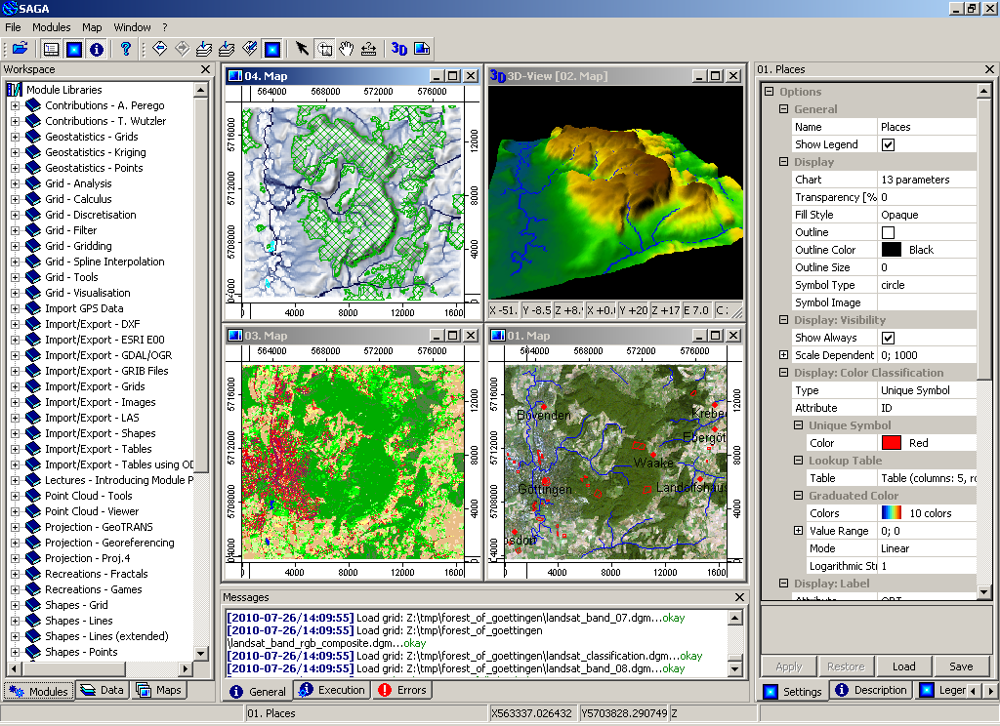

SAGA¶
Asztali GIS¶
A SAGA (System for Automated Geoscientific Analyses) egy nyílt forráskódú térinformatikai rendszer (GIS) a térbeli adatok szerkesztésére és elemzésére. Sok modult tartalmaz a vektor (pont, törtvonal és terület), táblázat, rács és kép adatok elemzéséhez. Többek között a csomag modulokat tartalmaz geostatisztikához, kép osztályozáshoz, vetületekhez, dinamikus folyamatok szimulációjához (hidrológia, vidékfejlesztés) és terep elemzéshez. A funkcionalitását elérhetjük a grafikus felhasználó felületen, a parancssorból vagy a C++ API-n keresztül.
A SAGA-t 2001-től fejlesztik és a SAGA fejlesztési központja a Hamburgi Egyetem Földrajzi Intézetében található, mely kiegészül a növekvő, világszerte megtalálható közösség hozzájárulásaival.


Alapfunkciók¶
Nagyszámú tudományos modul elérése a grafikus felhasználói felületen vagy a parancssoron keresztül
Import/Export különböző fájl formátumokba
Adatok vetületi átszámítása, újramintavételezése
Vektor adatok kezelése (összefűzés, metszés, attribútumok)
Lidar adatokból származó pontfelhők kezelése
Raszter adatok: interpoláció, költség elemzés, …
Kép elemzés: szűrők, él keresés, klaszter analízis, szegmentálás
Digitális terep elemzés: geomorfikus index generálás, csatorna hálózat, metszetek, szintvonalak, …
Geostatisztika: modulok variogram illesztéshez és krigeléshez
Gyors felhasználói interfész az adatok kezeléséhez és megjelenítéséhez
3D megjelenítés
Egyértelmű C++ API új modulok létrehozásához
Szkriptek a parancssorból, Python kötések
A SAGA az RSAGA modulon keresztül elérhető az R statisztikai nyelvből
Részletek¶
Honlap: https://saga-gis.sourceforge.io/en/index.html
Licenc: LGPL v2.1 (api); GPLv2 (GUI és modulok)
Szoftver verzió: 8.2.2
Támogatott platformok: Windows, Linux, FreeBSD
API interfészek: C++, Python, R
Támogatás: https://sourceforge.net/p/saga-gis/mailman/